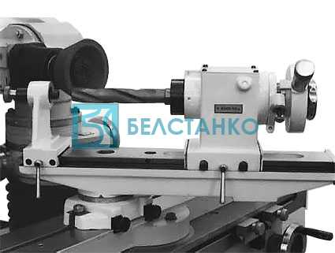
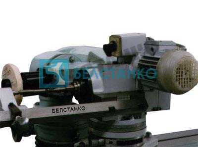
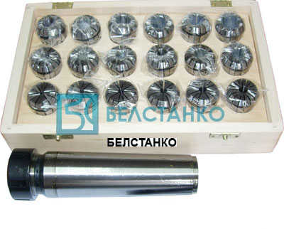
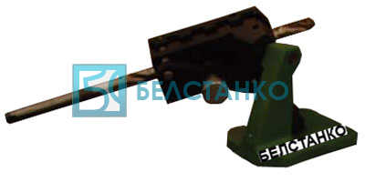
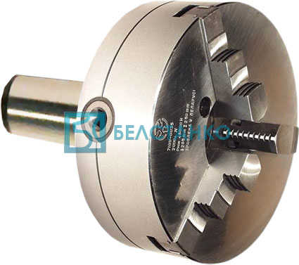

Позиций в разделе: 13




3Е642Е.П8.055
Патрон цанговый
165 000 ₽
ВЗ-318.П1
Бабка универсальная
204 300 ₽

ВЗ-318.П40
Патрон цанговый
Цена по запросу
ВЗ-318.П41-02
Патрон цанговый
165 000 ₽
ВЗ-318.П84
Патрон трёхкулачковый
71 250 ₽

ВЗ-319.П40-01
Патрон цанговый
61 200 ₽